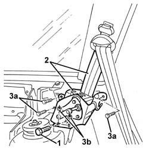

7065B40 Rear seat belt reel mounting BRACKET , (one), left or right - R.R .
- Path
- Procedures > 70 FITTINGS > 7065 SEAT BELTS AND ACCESSORIES > 7065B rear safety belts > 7065B40 Rear seat belt reel mounting BRACKET , (one), left or right - R.R .
- Kind
- repair procedure (removal / refitting; the operation number is the code)
- Applies to
- all engines; all production periods
- Interactive page
- https://sloeber94.github.io/elrnDB-a156/en/#/3238981
Applies to: all engines; all production periods; only with equipment: Station Wagon
 Removing
Removing
 Refitting
Refitting7040B22 luggage compartment/load platform moulding - r+r
7040B15 (One), rear side trim mounting BRACKET left or right - R.R .
7040B28 PET transport PROTECTION and load carrying compartment COVER COMBINATION BLIND - R.R.
- 7040L44 rear compartment scuff strip - r r
7050A47 SIDE PANEL (one) for rear seat BACKREST., left or right - R.R .
7040B30 l/h or r/h side support (one) for load platform cover blind - arrange
7040B06 side trim (one) lh or rh, load compartment/load platform - r r
1. Unscrew the winder retaining bolt.
2. Move the seat belt winder.
3. Undo the bolts (3a) and nuts (3b) securing the bracket.
4. Remove the bracket.
5. If necessary, remove the striker (see op. 7050A45 STRIKER FOR ATTACHMENT/RELEASE DEVICE for .one( SPLIT rear), seat BACKREST left or right - R.R. )

Applies to: all engines; all production periods; only with equipment: Station Wagon
Refitting
RemovingCheck that the bracket is not damaged.
Fit the bracket in position and fix it with the nuts and bolts.
Fit the winder in position and fix it using the bolt.
 | Fastening | Component | Ø | Value (daNm) |
|---|---|---|---|---|
2 | Bolt | REAR SEAT BELT REEL. | - | 4.0 |
If removed, refit the striker (see op. 7050A45 STRIKER FOR ATTACHMENT/RELEASE DEVICE for .one( SPLIT rear), seat BACKREST left or right - R.R. )
7040B06 side trim (one) lh or rh, load compartment/load platform - r r
7040B30 l/h or r/h side support (one) for load platform cover blind - arrange
7050A47 SIDE PANEL (one) for rear seat BACKREST., left or right - R.R .
- 7040L44 rear compartment scuff strip - r r
7040B28 PET transport PROTECTION and load carrying compartment COVER COMBINATION BLIND - R.R.
7040B15 (One), rear side trim mounting BRACKET left or right - R.R .
Topics linked from this page (7)
- 7040B06 side trim (one) lh or rh, load compartment/load platform - r r
- 7040B15 (One), rear side trim mounting BRACKET left or right - R.R .
- 7040B22 luggage compartment/load platform moulding - r+r
- 7040B28 PET transport PROTECTION and load carrying compartment COVER COMBINATION BLIND - R.R.
- 7040B30 l/h or r/h side support (one) for load platform cover blind - arrange
- 7050A45 STRIKER FOR ATTACHMENT/RELEASE DEVICE for .one( SPLIT rear), seat BACKREST left or right - R.R.
- 7050A47 SIDE PANEL (one) for rear seat BACKREST., left or right - R.R .